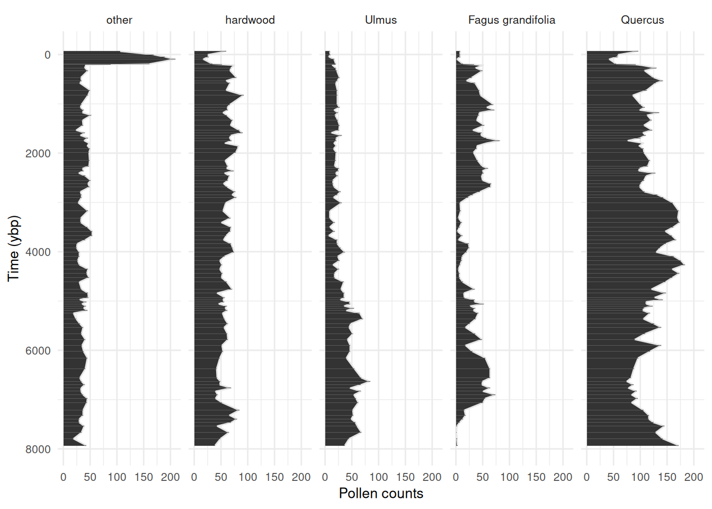

# Load required packages
library(ggplot2)
library(dplyr)
library(tidyr)
library(stringr)
library(scales)
library(RcppArmadillo)
library(minqa)
library(matrixStats)
library(numDeriv)
library(mvtnorm)
library(multinomialTS)
# Read-in the wrangled data
# Read in our X variables
data("story_char_wide", package = "multinomialTS")
# Read in the long data for plotting
data("story_pollen_wide", package = "multinomialTS")multinomialTS Vignette
2025-05-08
Introduction
One of the primary goals of this model is to be able to test multiple hypotheses about the data and lend statistical support to the different hypotheses. For example which environmental drivers are having the strongest effects on which taxa? Or, are interactions among taxa or abiotic variables driving change in the system? This state-space approach allows us to estimate coefficients for taxa interactions and driver-taxa relationships, that we don’t get from methods such as ordination or cluster analysis. We recommend this method as complimentary to other methods, as both have their advantages.
This vignette
This vignette will take us through:
- Choosing a binning resolution for
mnTS()(Section 2.1 and Section 2.2). - Finding initial conditions with
mnGLMM()(Section 2.3.1). - Fitting
mnTS()with and without species interactions (Section 2.4). - Assess the resulting models (Section 2.5).
Fitting mnTS()
This vignette will work with the data that have focal taxa and groups already wrangled. A second vignette will be added to cover the data wrangling, for now see this workshop
Here is what the state variable () data look like:
head(story_pollen_wide)# A tibble: 6 × 7
# Groups: age, depth [6]
age depth other hardwood `Fagus grandifolia` Quercus Ulmus
<dbl> <dbl> <int> <int> <int> <int> <int>
1 -66.2 0.5 106 60 8 96 9
2 2.85 32.5 169 26 8 59 10
3 45.8 64.5 189 27 8 58 7
4 94.1 96.5 209 17 2 42 17
5 191. 128. 161 34 13 55 20
6 203. 132. 88 52 34 91 19And our covariate ():
head(story_char_wide)# A tibble: 6 × 3
age depth char_acc
<dbl> <dbl> <dbl>
1 -66.2 0.5 0
2 -63.4 1.5 15.8
3 -61.4 2.5 40.3
4 -59.8 3.5 21.8
5 -58.5 4.5 37.3
6 -57.2 5.5 29.8For the moment, we are keeping the age and depth columns in both tibbles. These columns are so that we have a common variable to match the two to tibbles, and will be removed a little later.
Always checkout some plots! See that big spike in “other”, this is the rise of ambrosia in recent decades. Worth clipping that from the data, major trends in the out-group indicates that something important is being aggregated in the reference (we don’t want that). I have left it in this example dataset for demonstration purposes.
Code
story_pollen_wide |>
pivot_longer(-c(age, depth)) |>
mutate(name = factor(name,levels = c(
"other", "hardwood", "Ulmus", "Fagus grandifolia", "Quercus"))) |>
ggplot(aes(x = age, y = value)) +
geom_area(colour = "grey90") +
geom_col() +
scale_x_reverse(breaks = scales::breaks_pretty(n = 6)) +
coord_flip() +
labs(y = "Pollen counts", x = "Time (ybp)") +
facet_wrap(~name,
nrow = 1) +
theme_minimal() +
theme(
text = element_text(size = 10),
)
State variables
We will start off by choosing a resolution for the model predictions (e.g., predicting ecological process at 50 or 100 year intervals).
# Time-span of the data divided by the number of observations
max(story_pollen_wide$age) / nrow(story_pollen_wide)[1] 83.48578
# Age differences between successive observations
diff(story_pollen_wide$age) [1] 69.017 42.946 48.331 96.968 11.459 14.340 54.308 55.284 138.681
[10] 66.118 48.695 143.230 103.015 186.753 58.537 54.550 52.888 50.954
[19] 104.623 100.248 100.144 51.406 53.372 52.350 53.950 51.957 53.782
[28] 59.512 72.266 168.719 111.125 47.302 47.531 47.949 55.391 90.190
[37] 66.359 68.199 97.921 60.144 54.207 109.400 165.792 141.147 93.284
[46] 90.969 85.959 87.634 86.346 79.080 85.733 84.658 85.647 85.731
[55] 86.000 88.257 84.158 86.849 90.252 144.587 79.708 89.321 43.635
[64] 43.511 42.991 42.250 44.523 47.083 54.088 115.201 99.857 73.484
[73] 128.326 116.359 119.324 123.707 132.304 219.725 184.122 71.101 68.843
[82] 66.205 65.555 71.999 71.922 86.020 153.328 103.854 76.139 71.061
[91] 71.132 129.632 127.729 137.070[1] 11.459 219.725[1] 85.0778[1] 38.36777This all looks great! If we bin the data at around 50-75 years, we will still have most of our data in independent bins.
Now that we know roughly what bin-width to use to maximize the number of observations in the state variables, we will apply the same bin-width to both the state variables and the covariate data.
Handling the covariates
Covariates need to be handled according to decisions that were made around the state variables, that is, if the state variables were binned at a century-level resolution then the covariates must match that resolution. We can have a finer temporal resolution of the covariates than we do of the state variables. In this dataset, our state variables have 95 observations, and our covariate has 646 observations over the same time-span. Having more observations of environmental covariates is common in palaeo-data and works well with fitting the model.
Since we need to apply the same binning procedure to both the state variables and the covariate, I like to join both datasets. Charcoal was sampled to a greater depth than the pollen data, so we are going to clip the covariate to the extent of the state variables and join the two datasets by their common variable, age.
# Clip covariate data to the extent of the state variables
# Join the two by age so that we get a square matrix
story_join <- story_char_wide |>
filter(age <= max(story_pollen_wide$age)) |>
left_join(story_pollen_wide)
# Always double check dimensions before/after joining!
# dim(story_join)
# tail(story_join)Now we have all our data joined. Note that the covariate (char_acc) has observations every cm, whereas pollen was sampled at less frequent intervals (this is OK! :smiley:).
head(story_join, n = 10)# A tibble: 10 × 8
age depth char_acc other hardwood `Fagus grandifolia` Quercus Ulmus
<dbl> <dbl> <dbl> <int> <int> <int> <int> <int>
1 -66.2 0.5 0 106 60 8 96 9
2 -63.4 1.5 15.8 NA NA NA NA NA
3 -61.4 2.5 40.3 NA NA NA NA NA
4 -59.8 3.5 21.8 NA NA NA NA NA
5 -58.5 4.5 37.3 NA NA NA NA NA
6 -57.2 5.5 29.8 NA NA NA NA NA
7 -56.0 6.5 34.4 NA NA NA NA NA
8 -54.8 7.5 21.2 NA NA NA NA NA
9 -53.7 8.5 20.5 NA NA NA NA NA
10 -52.6 9.5 8.26 NA NA NA NA NAI always do lots of quick checks like head(), tail(), dim() (and many more!) to make sure to catch any coding mistakes!
tail(story_join, n = 10)# A tibble: 10 × 8
age depth char_acc other hardwood `Fagus grandifolia` Quercus Ulmus
<dbl> <dbl> <dbl> <int> <int> <int> <int> <int>
1 7777. 648. 2.50 NA NA NA NA NA
2 7794. 648. 8.19 19 49 2 142 45
3 7812. 650. 19.1 NA NA NA NA NA
4 7829. 650. 6.19 NA NA NA NA NA
5 7845. 652. 2.78 NA NA NA NA NA
6 7863. 652. 4.20 NA NA NA NA NA
7 7880. 654. 5.02 NA NA NA NA NA
8 7898. 654. 3.17 NA NA NA NA NA
9 7914. 656. 4.51 NA NA NA NA NA
10 7931. 656. 2.60 43 39 3 172 37This all looks good, and we can now bin the data to an appropriate temporal resolution for fitting the model. Choosing a bin-width may take some trial and error, I’m going with a bin-width of 50 years.
We now apply the bins to our data. For most types of covariates we want the average value of the covariate in each bin. But for the pollen count data, we want the sum. This is because of the underlying multinomial distribution in the model.
# The following code
story_binned <- bind_cols(bins = bins, story_join) |>
group_by(bins) |> # Group the data by the bins so that we calculate per time bin
summarise(
age = mean(age, na.rm = T), # the center of the bin
char_acc = mean(char_acc, na.rm = T), # mean charcoal accumulation rate per bin
other = sum(other, na.rm = T), # the sums of the count data
hardwood = sum(hardwood, na.rm = T),
`Fagus grandifolia` = sum(`Fagus grandifolia`, na.rm = T),
Ulmus = sum(Ulmus, na.rm = T),
Quercus = sum(Quercus, na.rm = T)
) |>
arrange(desc(age))
# Be aware that the gaps in the pollen data are now filled with 0's not NALet’s see what the data look like binned at a 50 year resolution:
head(story_binned, n = 10)# A tibble: 10 × 8
bins age char_acc other hardwood `Fagus grandifolia` Ulmus Quercus
<int> <dbl> <dbl> <int> <int> <int> <int> <int>
1 160 7914. 3.43 43 39 3 37 172
2 159 7863. 4.00 0 0 0 0 0
3 158 7812. 11.1 19 49 2 45 142
4 157 7761. 4.06 0 0 0 0 0
5 156 7713. 5.29 0 0 0 0 0
6 155 7666. 8.24 34 65 1 68 129
7 154 7609. 8.50 0 0 0 0 0
8 153 7553. 9.27 39 43 2 60 145
9 152 7502. 5.05 0 0 0 0 0
10 151 7457. 5.46 30 69 7 57 125This is looking good, we have reduced the time-intervals over which to run the model. The data are now 160 rows with complete covariate data, containing 93 state variable observations. The original number of pollen observations was 95, so we have not summed many observations within the same bins.
multinomialTS requires two matrices, a site-by-species matrix , and a covariate matrix , so we will leave tibbles behind and split the data. variables may be of different types (e.g., continuous, categorical…) but should be scaled relative to each other.
story_pollen_matrix <- story_binned |> # Select taxa
select(other, hardwood, Ulmus, `Fagus grandifolia`, Quercus) |>
rename("Fagus" = "Fagus grandifolia") |>
as.matrix()
# Replacing 0 with NA is not strictly necessary the way we use the data today
# But it is a good safety to avoid 0-count data where it should be no observation
story_pollen_matrix[which(rowSums(story_pollen_matrix) == 0), ] <- NA
head(story_pollen_matrix) other hardwood Ulmus Fagus Quercus
[1,] 43 39 37 3 172
[2,] NA NA NA NA NA
[3,] 19 49 45 2 142
[4,] NA NA NA NA NA
[5,] NA NA NA NA NA
[6,] 34 65 68 1 129
story_char_matrix_scaled <- story_binned |> # select covariates
select(char_acc) |>
as.matrix() |>
scale() # Scale covariates
head(story_char_matrix_scaled) char_acc
[1,] -0.9826414
[2,] -0.8978991
[3,] 0.1548837
[4,] -0.8894600
[5,] -0.7078643
[6,] -0.2731469Fitting multinomialTS
Ok, now we have:
- Chosen a temporal resolution for the model of 50-year bins
- Organised the data into a site-by-species matrix at 50-year bins
- Binned and scaled covariate matrix
With that, we can fit the model.
Finding initial conditions using mnGLMM()
The mnTS() function will provide estimates for biotic interactions ( matrix), taxa-driver relationships ( matrix), and cross-correlated error ( matrix). But the model needs initial starting values for these parameters to begin with. We get initial starting conditions from the data by running the mnGLMM() function. mnGLMM() returns estimates for the and matrices (not the matrix) and assumes that there are no time gaps in the data.
Tip
The arguments of the starting values in both the
mnGLMM()andmnTS()are all suffixed with.start(e.g.,B.startwill be the starting values for the matrix).The arguments of the parameters to be estimated are all suffixed with
.fixed(e.g.,B.fixedwill be parameters that are estimated from matrix).
Setting-up parameters for mnGMLL()
Now, lets set up the parameters for mnGLMM(). We need:
- A vector that indicates the row indices where there are state variable observations:
sample_idx - An integer number of covariates (+ 1 for
mnGLMM()):p - An integer of the number of state variables:
n - A matrix of starting values for :
B.start.glmm - A matrix of parameters to estimate:
B.fixed.glmm - A matrix of parameters to estimate:
V.fixed.glmm
# set-up sample index
sample_idx <- which(rowSums(story_pollen_matrix) != 0)
# make sure it works
head(story_pollen_matrix[sample_idx, ]) other hardwood Ulmus Fagus Quercus
[1,] 43 39 37 3 172
[2,] 19 49 45 2 142
[3,] 34 65 68 1 129
[4,] 39 43 60 2 145
[5,] 30 69 57 7 125
[6,] 30 80 49 13 116Set-up the remaining parameters:
# Set-up parameters
p <- ncol(story_char_matrix_scaled) + 1 # Number of independent variables plus intercept
n <- ncol(story_pollen_matrix) # number of taxa
V.fixed.glmm <- diag(n)
diag(V.fixed.glmm) <- NA
V.fixed.glmm[1] <- 1
B.fixed.glmm <- matrix(c(rep(0,p),rep(NA, (n - 1) * p)), p, n) # reference taxa [,1] are set to 0
B.start.glmm <- matrix(c(rep(0,p),rep(.01, (n - 1) * p)), p, n) # reference taxa [,1] are set to 0These parameters are used as arguments to the mnGLMM() function. Check them out by printing them in your console. Each matrix needs to be the correct dimensions given the number of taxa and number of covariates. The position elements of each matrix reflect the species and/or the covariates, as we will see later in the output of the model.
Fitting mnGLMM()
Remember that mnGLMM() does not handle gaps in the data and only fits complete and matrices. We have created a variable for out observation indices (sample_idx), so for mnGLMM() we will index the matrices by this variable: e.g., story_pollen_matrix[sample_idx, ].
# fit glmm
start_time <- Sys.time()
glmm_mod <- mnGLMM(Y = story_pollen_matrix[sample_idx, ],
X = story_char_matrix_scaled[sample_idx, ,drop = F],
B.start = B.start.glmm,
B.fixed = B.fixed.glmm,
V.fixed = V.fixed.glmm)
end_time <- Sys.time()
end_time - start_timeTime difference of 14.56672 secsThe outputs of mnGLMM() can be examined with the summary(glmm_mod) function.
summary(glmm_mod)
Call: mnGLMM with Tmax = 93 n = 5
logLik = 506.1927, AIC = -984.3855 [df = 14]
dispersion parameter = 1
Fitted Coefficients with approximate se
Coef. se t P
(intercept).hardwood 0.32520544 0.08449697 3.8487232 1.187351e-04
char_acc.hardwood -0.15611315 0.08828450 -1.7682962 7.701141e-02
(intercept).Ulmus -0.31413043 0.11063692 -2.8392911 4.521389e-03
char_acc.Ulmus -0.27877420 0.10904240 -2.5565671 1.057107e-02
(intercept).Fagus -0.26463309 0.11061622 -2.3923534 1.674071e-02
char_acc.Fagus -0.44517877 0.11465596 -3.8827356 1.032879e-04
(intercept).Quercus 0.99820549 0.08800678 11.3423702 8.092255e-30
char_acc.Quercus -0.06223211 0.09098390 -0.6839903 4.939813e-01
Overall model
B =
other hardwood Ulmus Fagus Quercus
(intercept) 0 0.3252054 -0.3141304 -0.2646331 0.99820549
char_acc 0 -0.1561132 -0.2787742 -0.4451788 -0.06223211
sigma = 1.055384
V =
other hardwood Ulmus Fagus Quercus
other 1 0.00000000 0.0000000 0.0000000 0.00000000
hardwood 0 0.00443052 0.0000000 0.0000000 0.00000000
Ulmus 0 0.00000000 0.3021339 0.0000000 0.00000000
Fagus 0 0.00000000 0.0000000 0.3045231 0.00000000
Quercus 0 0.00000000 0.0000000 0.0000000 0.07575829Setting-up parameters for mnTS()
Now, lets set up the parameters for mnTS(). mTS() needs:
- row indices as before:
sample_idx - the number of covariates:
p - the number of state variables:
n - starting values for each matrix:
-
:
B0.start.mnTS(intercept) -
:
B.start.mnTS(driver-taxa) -
:
C.start.mnTS(taxa interactions) -
:
V.start.mnTS(cross-correlated error)
-
:
- parameters to estimate for each matrix:
-
:
B0.fixed.mnTS -
:
B.fixed.mnTS -
:
C.fixed.mnTS -
:
V.fixed.mnTS
-
:
We are using the output from mnGLMM() as starting values for the matrices , , and . mnGLMM() does not provide estimates for , so we handle a little differently and we input values close to zero for each parameter estimated and let mnTS() do the rest.
# B.start etc
B0.start.mnTS <- glmm_mod$B[1, , drop = F]
B.start.mnTS <- glmm_mod$B[2, , drop = F]
sigma.start.mnTS <- glmm_mod$sigma
V.fixed.mnTS <- matrix(NA, n, n) # Covariance matrix of environmental variation in process eq
V.fixed.mnTS[1] <- 1
V.start.mnTS <- V.fixed.mnTS
V.start.mnTS <- glmm_mod$V
B.fixed.mnTS <- matrix(NA, p-1, n)
B.fixed.mnTS[,1] <- 0
B0.fixed.mnTS = matrix(c(0, rep(NA, n - 1)), nrow = 1, ncol = n)
# Set-up C without interactions
C.start.mnTS <- .5 * diag(n)
C.fixed.mnTS <- C.start.mnTS
C.fixed.mnTS[C.fixed.mnTS != 0] <- NAFitting mnTS()
Remember, mnTS() does handle gaps in the state-variables where there are data in the covariate matrix. In the following code, we use the complete (no gaps) matrix story_pollen_matrix[sample_idx, ] with dimensions: 93, 5. And the full matrix: story_char_matrix_scaled with dimensions: 160, 1 We will fit the model twice:
- Without taxa interactions.
- And without taxa interactions.
Tip
Note the use of sample_idx in
story_pollen_matrix[sample_idx, ]andTsample = sample_idx. This is important as it tells the model where there are observations of in relation to observations in .
start_time <- Sys.time()
mnTS_mod <- mnTS(Y = story_pollen_matrix[sample_idx, ],
X = story_char_matrix_scaled, Tsample = sample_idx,
B0.start = B0.start.mnTS, B0.fixed = B0.fixed.mnTS,
B.start = B.start.mnTS, B.fixed = B.fixed.mnTS,
C.start = C.start.mnTS, C.fixed = C.fixed.mnTS,
V.start = V.start.mnTS, V.fixed = V.fixed.mnTS,
dispersion.fixed = 1, maxit.optim = 1e+6)
# maxit.optim is the max number of iterations the optimiser will complete before stopping.
# increase maxit.optim if the model needs a lot of time to fit.
end_time <- Sys.time()
end_time - start_timeTime difference of 1.203912 minsIn this following code we set-up to define which interactions to estimate. can take many forms, here we set-up a two-way interaction between key species.
Tip
Note that for the starting values of parameters I am using the output of the no-interaction
mnts()model above. This is perfectly OK because we are only providing reasonable models for the model to work with. If the starting values are closer to the ‘true’ values then the model will likely optimize faster.
# Set-up C with interactions between Fagus and Quercus
C.start.int.mnTS <- .5 * diag(n)
C.start.int.mnTS[5, 4] <- .001
C.start.int.mnTS[4, 5] <- .001
C.fixed.int.mnTS <- C.start.int.mnTS
C.fixed.int.mnTS[C.fixed.int.mnTS != 0] <- NA
start_time <- Sys.time()
mnTS_mod_int <- mnTS(Y = story_pollen_matrix[sample_idx, ],
X = story_char_matrix_scaled, Tsample = sample_idx,
B0.start = mnTS_mod$B0, B0.fixed = B0.fixed.mnTS,
B.start = mnTS_mod$B, B.fixed = B.fixed.mnTS,
C.start = mnTS_mod$C, C.fixed = C.fixed.int.mnTS,
V.start = mnTS_mod$V, V.fixed = V.fixed.mnTS,
dispersion.fixed = 1, maxit.optim = 1e+6)
end_time <- Sys.time()
end_time - start_timeTime difference of 3.481955 minsInterpreting outputs
The coef() and summary() functions will show the model outputs. Let’s check out the coefficients of interaction model:
summary(mnTS_mod_int)
Call: mnTS with Tmax = 93 n = 5
logLik = 750.0241, AIC = -1438.048 [df = 31]
dispersion parameter = 1
Fitted Coefficients with approximate se
Coef. se t P
hardwood 0.64627755 0.128823953 5.016750 5.255293e-07
Ulmus -0.29933182 0.113566390 -2.635743 8.395329e-03
Fagus -0.91867049 0.255370791 -3.597398 3.214159e-04
Quercus 1.38347522 0.089608656 15.439080 8.936578e-54
sp.other.other 0.89177470 0.011064525 80.597648 0.000000e+00
sp.hardwood.hardwood 0.96083347 0.013894772 69.150720 0.000000e+00
sp.Ulmus.Ulmus 0.94591268 0.017282507 54.732377 0.000000e+00
sp.Fagus.Fagus 0.83383821 0.036552053 22.812350 3.457807e-115
sp.Quercus.Fagus 0.06930431 NaN NaN NaN
sp.Fagus.Quercus -0.08431459 NaN NaN NaN
sp.Quercus.Quercus 0.99072926 0.007589615 130.537489 0.000000e+00
char_acc.hardwood -0.15774081 0.021983518 -7.175413 7.208936e-13
char_acc.Ulmus -0.15937356 0.037985313 -4.195663 2.720749e-05
char_acc.Fagus -0.21576678 NaN NaN NaN
char_acc.Quercus -0.18580969 0.019967371 -9.305666 1.331547e-20
Fitted Coefficients with conditional approximate se
Coef. se t P
hardwood 0.64627755 0.146885289 4.399879 1.083111e-05
Ulmus -0.29933182 0.176984151 -1.691292 9.078111e-02
Fagus -0.91867049 0.265149460 -3.464727 5.307700e-04
Quercus 1.38347522 0.068468911 20.205889 8.689079e-91
sp.other.other 0.89177470 0.010890072 81.888780 0.000000e+00
sp.hardwood.hardwood 0.96083347 0.010722160 89.611929 0.000000e+00
sp.Ulmus.Ulmus 0.94591268 0.009032307 104.725480 0.000000e+00
sp.Fagus.Fagus 0.83383821 0.021011423 39.684996 0.000000e+00
sp.Quercus.Fagus 0.06930431 0.007267487 9.536213 1.481432e-21
sp.Fagus.Quercus -0.08431459 0.034418562 -2.449684 1.429818e-02
sp.Quercus.Quercus 0.99072926 0.014078411 70.372233 0.000000e+00
sigma 0.66036129 0.037411671 17.651211 9.959806e-70
char_acc.hardwood -0.15774081 0.024046618 -6.559792 5.388286e-11
char_acc.Ulmus -0.15937356 0.031947105 -4.988670 6.079642e-07
char_acc.Fagus -0.21576678 0.060354060 -3.575017 3.502053e-04
char_acc.Quercus -0.18580969 0.018905045 -9.828577 8.480861e-23
Overall model
B0 =
other hardwood Ulmus Fagus Quercus
(intercept) 0 0.6462775 -0.2993318 -0.9186705 1.383475
B =
other hardwood Ulmus Fagus Quercus
char_acc 0 -0.1577408 -0.1593736 -0.2157668 -0.1858097
C =
other hardwood Ulmus Fagus Quercus
other 0.8917747 0.0000000 0.0000000 0.00000000 0.00000000
hardwood 0.0000000 0.9608335 0.0000000 0.00000000 0.00000000
Ulmus 0.0000000 0.0000000 0.9459127 0.00000000 0.00000000
Fagus 0.0000000 0.0000000 0.0000000 0.83383821 -0.08431459
Quercus 0.0000000 0.0000000 0.0000000 0.06930431 0.99072926
sigma = 0.6603613
V =
other hardwood Ulmus Fagus Quercus
other 1.0000000 0.25286788 0.24451372 0.4181247 0.13922069
hardwood 0.2528679 0.07460389 0.06003974 0.1084949 0.03416640
Ulmus 0.2445137 0.06003974 0.09392674 0.1082596 0.03023850
Fagus 0.4181247 0.10849494 0.10825965 0.3166117 0.02520510
Quercus 0.1392207 0.03416640 0.03023850 0.0252051 0.02726373
coef(mnTS_mod_int) Coef. se t P
hardwood 0.64627755 0.128823953 5.016750 5.255293e-07
Ulmus -0.29933182 0.113566390 -2.635743 8.395329e-03
Fagus -0.91867049 0.255370791 -3.597398 3.214159e-04
Quercus 1.38347522 0.089608656 15.439080 8.936578e-54
sp.other.other 0.89177470 0.011064525 80.597648 0.000000e+00
sp.hardwood.hardwood 0.96083347 0.013894772 69.150720 0.000000e+00
sp.Ulmus.Ulmus 0.94591268 0.017282507 54.732377 0.000000e+00
sp.Fagus.Fagus 0.83383821 0.036552053 22.812350 3.457807e-115
sp.Quercus.Fagus 0.06930431 NaN NaN NaN
sp.Fagus.Quercus -0.08431459 NaN NaN NaN
sp.Quercus.Quercus 0.99072926 0.007589615 130.537489 0.000000e+00
char_acc.hardwood -0.15774081 0.021983518 -7.175413 7.208936e-13
char_acc.Ulmus -0.15937356 0.037985313 -4.195663 2.720749e-05
char_acc.Fagus -0.21576678 NaN NaN NaN
char_acc.Quercus -0.18580969 0.019967371 -9.305666 1.331547e-20We have found that bootstrapping provides better estimates of standard errors (and subsequent P-values). The boot() function will bootstrap the model, but may take a very long time. We won’t do this today, but we strongly recommend bootstrapping your final models.
Comparing models
The summary of the model provides both the log likelihood and the AIC (akaike information criterion). These can be used for comparing models. Today we will use the AIC. AIC is penalised for the number of parameters estimated, and so can be better for comparing models where one has more parameters estimated (i.e., the interaction model is estimating more parameters than the model without interactions).
The AIC (and log likelihood) values can be accessed directly with mnTS_mod_int$AIC.
data.frame(without_interactions = mnTS_mod$AIC,
with_interactions = mnTS_mod_int$AIC) without_interactions with_interactions
1 -1391.369 -1438.048